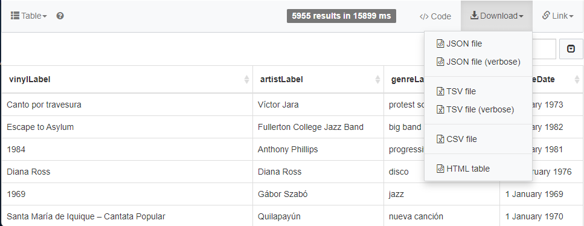
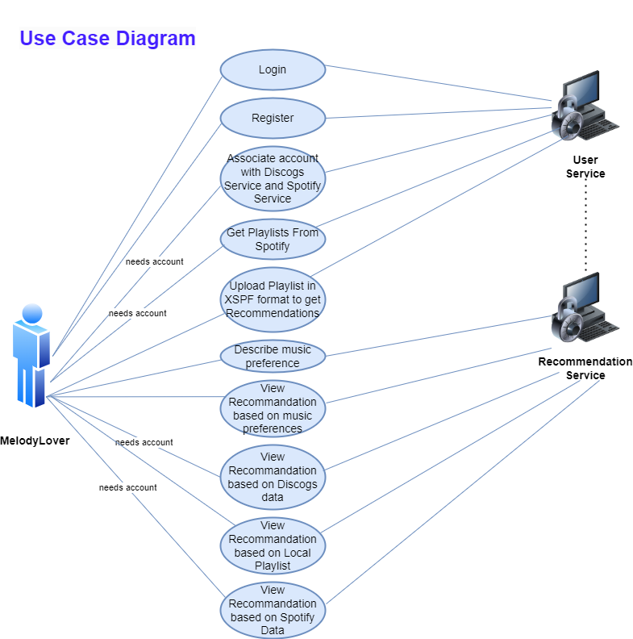
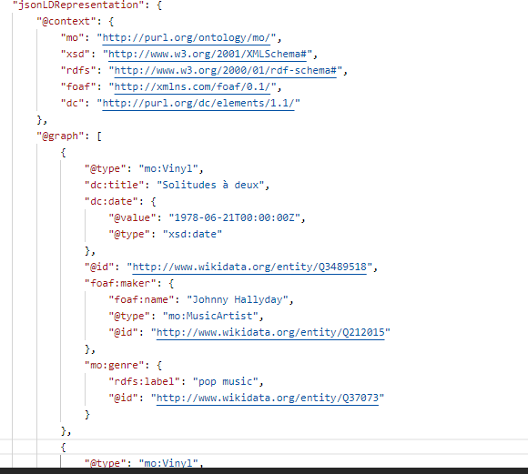
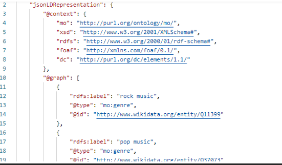

Vire (Vinyl Recommender Tool) - Technical Report
Students:
Table of contents
- Project description
- Architecture of the WEB application
- Sources of External Data
- Frontend Design
- End Users
- Ontology and Vocabularies
- Linked Data Principles
- Bibliography
1. Project description
Build a (micro-)service Web system able to "intelligently" recommend – by exposing a SPARQL endpoint – vinyl music records according to various criteria: user preferences (specified via controlled natural language constructs such as "I always like/love/prefer classical music, especially opera music by Rossini or Verdi and performed by Angela Gheorghiu or Juan Diego Flórez; I sometimes like progressive rock and post-rock; I like only metal albums released before 2000; I always dislike/hate rap and hip-hop; I dislike songs produced by Flood in the last 25 years"), past song purchases on various music stores, playlists – available online via music streaming services: Last.fm and alternative solutions – and/or locally – for instance, by uploading a JSPF/XSPF document. The playlists could be created by the user or shared by her/his virtual "friends" (consider at least one social network). The system will use several music-related knowledge models (e.g., Music Ontology or MusicRecording concept from schema.org) and available public resources: Discogs, MusicBrainz, Musicmoz Music Styles.
2. Architecture of the WEB Application
High Level Arhitecture for our WEB Application:

Database Architecture
The database architecture comprises several interrelated tables designed to store and organize information about music tracks, collections of tracks, users (referred to as members), and authentication tokens for streaming and recording services.
Tracks Table: This table stores details about music tracks. Each track has a unique id, and attributes that specify the singer, creation_date of the track, and its genre.
Collections_tracks Table: This is a junction table that establishes a many-to-many relationship between collections and tracks, allowing a single collection to contain multiple tracks and a single track to be part of multiple collections. Each record has a unique id, with collection_id and track_id serving as foreign keys to the collections and tracks tables respectively.
Collections Table: This table details the collections, which can represent albums, playlists, or other groupings of tracks. Each collection is uniquely identified by an id and is associated with a member_id indicating the creator of the collection. It also includes the name of the collection and the creation_date.
Collections_members Table: This junction table manages the associations between members and collections, allowing members to be linked to multiple collections and vice versa. The table uses collection_id and member_id as foreign keys to reference the collections and members tables, respectively.
Members Table: The members table contains user information. Each member is assigned a unique id and has fields for first_name, last_name, email, country_code, creation_date, and secret, where secret is used for storing encrypted passwords or authentication-related data.
Stream_fm_tokens Table: This table holds tokens associated with streaming services. Each token has a unique id and is linked to a member via the email field. The password field is used to store an encrypted password or token.
Record_token Table: Similar to the stream_fm_tokens table, this table stores tokens related to recording services. It includes a unique id, and the email and password fields for authentication purposes.
Backend Services
Vinyl Architecture (Sparql Endpoint)
This module was developed using Java Spring Boot and is deployed on Render Platform ( We are utilizing a free instance type, which has a feature where it shuts down during periods of inactivity. As a result, this can lead to delays of 50 seconds or more when processing new requests).
It can be found here: Sparql Endpoint
This service offers a single endpoint. The endpoint accepts a query as input and we run it on the Stardog platform utilizing the Stardog endpoint. On the Stardog Platform we created our database that contains information about vinyl records in RDF format. Moreover, Stardog platform offered us an endpoint to execute queries on our database.
We are making a POST request to the Stardog endpoint at https://sd-c21c8daf.stardog.cloud:5820/vire/query. Within the body of this request, we include the specific query that we intend to execute. As a result of the query, the endpoint returns a list of vinyl records.
The arhitecture of the service is the following:

"An example of the input for the request to the endpoint would look like this:"
{
"query": "PREFIX rdf: \nPREFIX sparqlResults: \nPREFIX xsd: \n\nSELECT ?genre ?genreLabel (COUNT(?vinyl) AS ?numberOfVinyls) \nWHERE {\n?result a sparqlResults:ResultSet .\n?result
sparqlResults:solution ?solution .\n?solution sparqlResults:binding
[ sparqlResults:variable \"vinyl\" ; sparqlResults:value ?vinyl ] .\n?solution
sparqlResults:binding [ sparqlResults:variable \"genre\" ; sparqlResults:value ?genre ] .\n?solution sparqlResults:binding [ sparqlResults:variable \"genreLabel\" ; sparqlResults:value ?genreLabel ] .\n}\n\n
GROUP BY ?genre ?genreLabel\nORDER BY DESC(?numberOfVinyls)\nLIMIT 1\n"
}
The data structure returned by this endpoint is characterized in the following way:

Open API for Sparql Endpoint Module:
User Architecture

Open API for User Architecture:
Recommendation Architecture
This module was developed using Java Spring Boot and is deployed on Render Platform ( We are utilizing a free instance type, which has a feature where it shuts down during periods of inactivity. As a result, this can lead to delays of 50 seconds or more when processing new requests).
It can be found here: Recommendation Endpoint
This service is tasked with offering a range of vinyl record recommendations, derived from various criteria.
Three distinct endpoints will be made available for this service. Each will have a unique input format, but ultimately, they will be configured to retrieve data from WikiData by interacting with the Sparql endpoint.
The role of this module is to serve as a bridge between the application's frontend and the Vinyls Service, which delivers the actual recommendations. Also this module will convert the received input using the Sparql QueryBuilder into a format that the Sparql endpoint can readily understand and process.
The arhitecture of the service is the following:

I. User Input-Based Recommendation:
Concept: Users can express their music preferences using a Controlled Natural Language (CNL).
Definition: Controlled natural language are simplified natural languages with limited grammar and vocabulary to reduce ambiguity and complexity.
Purpose of CNL: To limit user inputs to specific words, ensuring clarity and simplicity.
CNL Structure:
Music Genres and Artists.
Predicates (like, dislike) to express feelings.
Summary: In our user interface, there is a specific section dedicated to this recommendation feature. Essentially, users are asked to indicate their preferences regarding various artists and music genres by selecting either 'like' or 'dislike' for each. Additionally, they are required to choose a time period for the music's release, such as the year, to further tailor their recommendations.
A sample payload accepted by this endpoint:

Leveraging the provided data, we developed a custom query builder designed to construct Sparql queries for transmission to the Sparql API. Upon receipt of the response from the sparQL API, we systematically convert the data into a JSON format. This conversion process ensures seamless integration and efficient data handling for requests initiated from our frontend application.
The resultant data structure provided by this endpoint is characterized as follows:

II. Recommendation Based on Past Purchases:
Mechanism: Users receive recommendations based on their previous purchases on Discogs.
Integration: Users link their application account to their Discogs account.
Process: Upon linking, the app saves the user's Discogs data. When requesting data, the app uses the Discogs authentication token to fetch past purchases.
Data Conversion: Information from Discogs API is formatted for the Vinyls GraphQL endpoint.
We will use Discogs API v2.0 and this is a RESTful interface providing access to various Discogs data.
Summary: In our user interface, the first step for the user is to link their account with Discogs. Once this association is completed, they are able to view personalized recommendations derived from their previous purchases on a page titled "Past Purchases."
Issue: At the outset of developing this application, our anticipation was to integrate a Discogs endpoint that would precisely fetch a user's historical purchases made through the Discogs platform. However, we encountered the absence of such a specific endpoint. This led us to pivot towards utilizing the collection feature offered by Discogs. Within Discogs, updating a collection with new vinyl acquisitions is not an automatic process; it requires manual entry of each new purchase.
But before accessing the collection, we need the user data from Discogs.
To access user data without requiring password sharing, we implemented the OAuth1.0 protocol offered by Discogs.
Data received from the Discogs API is reformatted to comply with the Vinyls endpoint's requirements.
Discogs API v2.0 offers a RESTful framework for interacting with Discogs data. It provides access to Database objects like Artists, Releases, and Labels in JSON format. Applications can manage User Collections and Wantlists, generate Marketplace Listings, and more.
We described in the Sources of External Data section how we access the user collection from Discogs and what information we extract from it.
III. Playlist-Based Recommendation:
Sources: Recommendations are based on playlists from Spotify or user-uploaded files.
Integration for Spotify: Users link their app account with Spotify.
Playlist Import: Users upload playlists to their account.
Data Handling: Information from Spotify API is formatted for the Vinyl endpoint.
Playlist Format: The app will utilize XSPF (XML Shareable Playlist Format) for local playlists, which is a standard web format for shareable playlists.
Summary: In our user interface, the first step for the user is to link their account with Spotify. Once this association is completed, they will be able to view personalized recommendations on a page titled "Recommendations Based on Playlists."
TO BE COMPLETED
Another option for receiving recommendations involves users uploading a playlist in XSPF format. This feature allows for playlist-based recommendations and does not require users to be logged into the application.
Regarding the recommendation logic for user-uploaded playlists, the process unfolds in this way: Firstly, the user sends the playlist file from the frontend to the backend. Once the backend receives the XSPF file, it processes the contents, extracting artists and genres. These details are then incorporated into the User Options model, akin to the approach used for user input-based recommendations. Following this, our custom-developed Sparql Builder is employed to formulate the query, which is subsequently dispatched to the main Vinyl Endpoint to procure the tailored list of recommendations.
A sample XSPF file containing simulated data might look like this:

Open API for Recommendation Architecture:
Playlist Architecture
The purpose of this module is to uphold the functions necessary for managing playlists, including creation, editing, deleting, getting and other related tasks.
The service is structured as follows:

Open API for Playlist Architecture:
3. Sources of External Data
We encountered a significant hurdle in sourcing online data about vinyl records. A large portion of the available information was centered on musical aspects such as artists and album details, including track listings and other music-related data. In our quest for specific information, we turned to several internet query tools, including:
- Wikidata's WikiData Query Service
- DBPedia's SparQL Query Editor
Our breakthrough came when we found that WikiData had the specific vinyl data we needed. We developed a specialized query and ran it through the WikiData Query Service.
SELECT DISTINCT ?vinylLabel ?artistLabel ?genreLabel ?releaseDate WHERE { { SELECT ?vinyl ?property { hint:Query hint:optimizer "None" . ?property wikibase:claim ?p ; wikibase:statementProperty ?ps . ?statement ?ps wd:Q178588 . ?vinyl ?p ?statement . } } ?vinyl wdt:P175 ?artist . ?vinyl wdt:P136 ?genre . ?vinyl wdt:P577 ?releaseDate . FILTER(?property = wd:P437) BIND(wd:Q178588 AS ?targetItem) SERVICE wikibase:label { bd:serviceParam wikibase:language "[AUTO_LANGUAGE],en" . } }This query is looking to return distinct records containing the labels of vinyl records, their artists, genres, and their release dates.
- ?vinyl wdt:P175 ?artist: Links the vinyl record to its artist.
- ?vinyl wdt:P136 ?genre: Links the vinyl record to its genre.
- ?vinyl wdt:P577 ?releaseDate: Links the vinyl record to its release date.
Also, we search for all entities that have a distribution format property (wd:P437) set to vinyl record (wd:Q178588).
The additional issue we faced involved the need to download this data and import it into the Stardog database. However, the Wikidata Query Service did not support exporting data in the required formats, which included Turtle, RDF/XML and NQuads.

We discovered a different online service that allowed us to query Wikidata and export the results as a Turtle file, namely the OpenLink Virtuoso SPARQL Query Editor.
The query we used is as follows:
SELECT ?vinyl ?vinylLabel ?artist ?artistLabel ?genre ?genreLabel ?date as ?releaseDate WHERE { SERVICE https://query.wikidata.org/sparql { SELECT distinct ?vinyl ?vinylLabel ?artist ?artistLabel ?genre ?genreLabel ?date WHERE { { SELECT ?vinyl ?property { hint:Query hint:optimizer "None" . ?property wikibase:claim ?p ; wikibase:statementProperty ?ps . ?st ?ps wd:Q178588 . ?vinyl ?p ?st . } } ?vinyl wdt:P175 ?artist . ?vinyl wdt:P136 ?genre . ?vinyl wdt:P577 ?date . FILTER(?property = wd:P437) BIND(wd:Q178588 AS ?target) SERVICE wikibase:label { bd:serviceParam wikibase:language "[AUTO_LANGUAGE],en" . } } } } LIMIT 10000We constructed a comprehensive vinyl records database that is robust enough to support a recommendation system. To establish and populate our database, we utilized the Stardog platform. We compiled a Turtle (.ttl) file containing data sourced from SparQL query executed on OpenLink Virtuoso SPARQL Query Editor. That file was imported into our database using Stardog platform.
The Stardog platform is particularly advantageous for our vinyl database project because it specializes in knowledge graph technology, which allows us to create interconnected data relationships crucial for a recommendation system. Its robust support for SparQL queries makes it an ideal choice for integrating diverse data sources. Moreover, Stardog's seamless integration with Stardog Studio provides a user-friendly environment for managing our data, making the development and maintenance of our database both efficient and scalable.
We experimented with several queries, including:
Query for Distinct Vinyl Records by Elvis Presley and Others in Pop and Rock Genres from 1960 to 1980, Excluding Queen and Punk Rock
SELECT DISTINCT ?vinyl ?vinylLabel ?artist ?artistLabel ?genre ?genreLabel ?releaseDate WHERE { ?result a sparqlResults:ResultSet . ?result sparqlResults:solution ?solution . ?solution sparqlResults:binding [ sparqlResults:variable "vinyl" ; sparqlResults:value ?vinyl ] . ?solution sparqlResults:binding [ sparqlResults:variable "vinylLabel" ; sparqlResults:value ?vinylLabel ] . ?solution sparqlResults:binding [ sparqlResults:variable "artist" ; sparqlResults:value ?artist ] . ?solution sparqlResults:binding [ sparqlResults:variable "artistLabel" ; sparqlResults:value ?artistLabel ] . ?solution sparqlResults:binding [ sparqlResults:variable "genre" ; sparqlResults:value ?genre ] . ?solution sparqlResults:binding [ sparqlResults:variable "genreLabel" ; sparqlResults:value ?genreLabel ] . ?solution sparqlResults:binding [ sparqlResults:variable "releaseDate" ; sparqlResults:value ?releaseDate ] . FILTER ((contains(?artistLabel, "Elvis Presley") || contains(?genreLabel, "pop music") || contains(?genreLabel, "rock music") )&& ?releaseDate >= xsd:dateTime('1960-01-01')&& ?releaseDate <= xsd:dateTime('1980-12-31')&& !contains(?artistLabel, "Queen") && !contains(?genreLabel, "punk rock") ) }
Query for top 10 Years with the Most Vinyl Record Releases:
SELECT (YEAR(?releaseDate) AS ?releaseYear) (COUNT(?vinyl) AS ?recordsCount) WHERE { ?result a res:ResultSet . ?result res:solution ?solution . ?solution res:binding [ res:variable "vinyl" ; res:value ?vinyl ] . ?solution res:binding [ res:variable "releaseDate" ; res:value ?releaseDate ] . } GROUP BY (?releaseDate) ORDER BY DESC(?recordsCount) LIMIT 10
Query for top 10 Artists with the Most Vinyl Releases:
SELECT DISTINCT ?artistLabel (COUNT(?vinyl) AS ?recordsCount) WHERE { ?result a res:ResultSet . ?result res:solution ?solution . ?solution res:binding [ res:variable "vinyl" ; res:value ?vinyl ] . ?solution res:binding [ res:variable "artistLabel" ; res:value ?artistLabel ] . } GROUP BY ?artistLabel ORDER BY DESC (?recordsCount) LIMIT 10
To provide vinyl recommendations to users, we utilized various external APIs, such as: Discogs API and Spotify API.
Discogs API
Our strategy included recommending vinyl records based on the user's history of song purchases from different music stores. For this, we used the Discogs API.
What is the method for retrieving necessary data?
To acquire user data, we must implement the OAuth1.0 protocol.
The OAuth 1.0a process includes three key server-side URLs:
- URL for Request Token: https://api.discogs.com/oauth/request_token
- URL for Authorization: https://www.discogs.com/oauth/authorize
- URL for Access Token: https://api.discogs.com/oauth/access_token
After securing the user token, authenticated requests can be made to these APIs:
- Access USER Identity API: /oauth/identity. This API helps in fetching the Discogs username of the current user, a critical piece of information for accessing their collection.
- Retrieve Collection Folders API: /users/{username}/collection/folders. With the username, we can now delve into the user's collection folders. These folders are utilized by Discogs users to organize their vinyl collections.
- Obtain Collection Items API: /users/{username}/collection/folders/{folder_id}. Having accessed the user's collection folders, we can use this API to gather the contents of a collection (as previously mentioned). These contents represent past purchases, from which we will derive recommendations.
This is a sample of the data we retrieve from the Discogs API.
"releases": [ { "id": 1350884, "instance_id": 1560102811, "date_added": "2024-01-09T04:44:15-08:00", "rating": 0, "basic_information": { "id": 1350884, "master_id": 73772, "master_url": "https://api.discogs.com/masters/73772", "resource_url": "https://api.discogs.com/releases/1350884", "thumb": "https://i.discogs.com/mKBiPr4ru_Q5WqqOydYO3d1IeOjk94RaRqqYxzYpKWA/rs:fit/g:sm/q:40/h:150/w:150/czM6Ly9kaXNjb2dz/LWRhdGFiYXNlLWlt/YWdlcy9SLTEzNTA4/ODQtMTIxMTk2NjAx/MS5qcGVn.jpeg", "cover_image": "https://i.discogs.com/B1PUEaducyWKlT-PuR6IF5VyQSRmGNoc9HmwPCl2kb0/rs:fit/g:sm/q:90/h:600/w:600/czM6Ly9kaXNjb2dz/LWRhdGFiYXNlLWlt/YWdlcy9SLTEzNTA4/ODQtMTIxMTk2NjAx/MS5qcGVn.jpeg", "title": "Release", "year": 1983, "formats": [ { "name": "Vinyl", "qty": "1", "text": "Gatefold Sleeve", "descriptions": [ "LP", "Album" ] } ], "artists": [ { "name": "David Knopfler", "anv": "", "join": "", "role": "", "tracks": "", "id": 260480, "resource_url": "https://api.discogs.com/artists/260480" } ], "labels": [ { "name": "Polydor", "catno": "817 235-1", "entity_type": "1", "entity_type_name": "Label", "id": 1610, "resource_url": "https://api.discogs.com/labels/1610" } ], "genres": [ "Rock", "Pop" ], "styles": [ "Pop Rock", "Ballad" ] }, "folder_id": 1 } ]From this data returned by Discogs API we extracted artists and genres
Additionally, we offer vinyl suggestions based on the user's playlists from various platforms, using data obtained from Spotify, a music streaming service.
Spotify API
4. Frontend Design
This part of the application was developed using React, a JavaScript library for building user interfaces.
A particular library employed in our project can be found at the following link: Library Link. It is utilized to fetch the album cover corresponding to the album name.
Current UI
Register Page

Login Page

Main Page

Artist liked option

Genre liked option

Year of release range option

The list of recommendations based on your preferences.

Local Playlist Page

Local Playlist Page - Choose File as First Step

Local Playlist Page - List of Vinyls returned

Profile Page

Profile Page - Discogs Account Linked

Last Purchases Page

List of Vinyls based on Discogs Information

Playlist page with Playlists From Spotify Account

Playlist page with Tracks from a Playlist

Playlist page with Vinyls Recommendations

5. End Users
Use Manual Reference
For a more comprehensive user guide, please refer to the
User Guide Page.
Use Case Diagram
This outlines the ways in which the user will engage with the application:

The term "end user" refers to someone who utilizes a product or service. This individual might not be the purchaser but is the final consumer of the product. In the context of our application, there are two primary types of end users:
- A developer looking to incorporate a music recommendation feature into their application.
- An individual passionate about music, seeking to explore more music that aligns with their preferences. (Whether through previous purchases, or by creating playlists, or through direct preferences - association of artists, genres.)
6. Ontology and Vocabularies
We will use existing ontologies and vocabularies to structure our business case effectively. These are required to support the Music Ontology we are utilizing and are represented by the following:
- PREFIX foaf: http://xmlns.com/foaf/0.1/
- PREFIX dc: http://purl.org/dc/elements/1.1/
- PREFIX xsd: http://www.w3.org/2001/XMLSchema#
- PREFIX rdfs: http://www.w3.org/2000/01/rdf-schema#
- PREFIX mo: http://purl.org/ontology/mo/
- PREFIX schema: https://schema.org/
- PREFIX rdf: http://www.w3.org/1999/02/22-rdf-syntax-ns#
How we will represent Vinyls in our Application?
- @type: Specifies the entity's category.
- @id: Assigns a unique resource identifier URL for Vinyl.
- foaf:maker: Relates an artist to their musical creation, the vinyl.
- foaf:name: Indicates the name of the Artist
- dc:date: Specifies when the Vinyl was issued.
- @value: Specifies the Release Date Value.
- dc:title: Indicates the name of the Vinyl.
- mo:image: Represents a visual depiction of a musical composition.
- mo:genre: Denotes a music style, either as text or linked to a WikiData genre entry, providing detailed and structured genre information for semantic web access.
- @rdfs:label Indicates the name of the Genre.

Output:

How we will represent Artists in our Application?
- @type: Specifies the entity's category.
- @id: Assigns a unique resource identifier URL for the Artist.
- foaf:name: Indicates the name of the Artist.

Output:

How we will represent Genres in our Application?
- @type: Specifies the entity's category.
- @id: Assigns a unique resource identifier URL for the Genre.
- @rdfs:label Indicates the name of the Genre.

Output:

7. Linked Data Principles
Linked Data is defined as a series of best practices for the publication of structured data on the internet. Its primary goal is to foster an ecosystem where information is readily available in a universally accessible format, suitable for processing by Semantic Web technologies. This objective is realized through adherence to four core Linked Data principles:
- Utilizing HTTP URIs to enable users to find these entities.
- Assigning Uniform Resource Identifiers (URIs) as names for various entities.
- Creating links to other URIs, enhancing the discoverability of additional data.
- Employing Semantic Web technologies, such as RDF, OWL, and SPARQL, to relay information.
In the context of Vire, several of these principles are applied as follows:
- The information pertaining to our resources is structured using the robust frameworks of the Music Ontology and the Schema.org vocabularies.
- Information regarding vinyl records and artists is interconnected, providing links that guide users to further resources and information about these topics such as WikiData.
- Each resource utilized within our system is associated with a unique URI.
To demonstrate that our application incorporates schema constructs, we utilized the OpenLink Structured Data Sniffer, a Google Chrome Extension, and captured several screenshots:
Artists:

Genres:

Vinyls:

The models derived from those examples have been included in the DataModeling folder.
8. Bibliography
- The SPARQL 1.1 Protocol
- RDF (Resource Description Framework)
- Stardog Platform
- Stardog Studio
- GraphQL endpoint
- Discogs
- Collections on Discogs
- OAuth1.0 protocol on Discogs Platform
- LastFM
- Schema.org Vocabulary
- Music Ontology
- XSPF for Playlists
- Linked Data
- OpenLink Virtuoso SPARQL Query Editor
- Spotify API